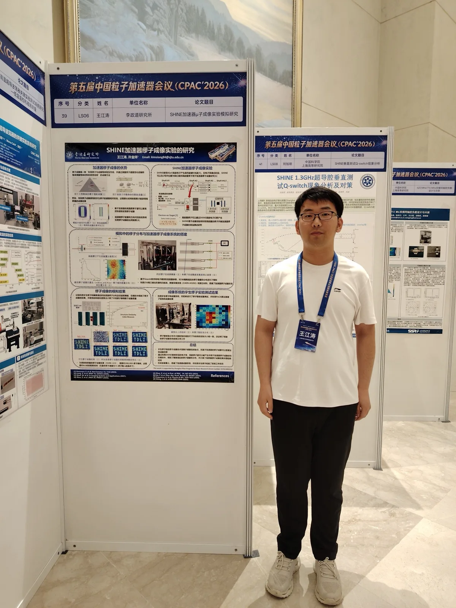
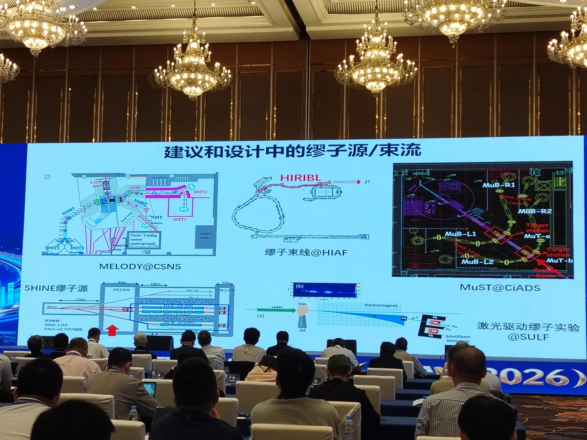
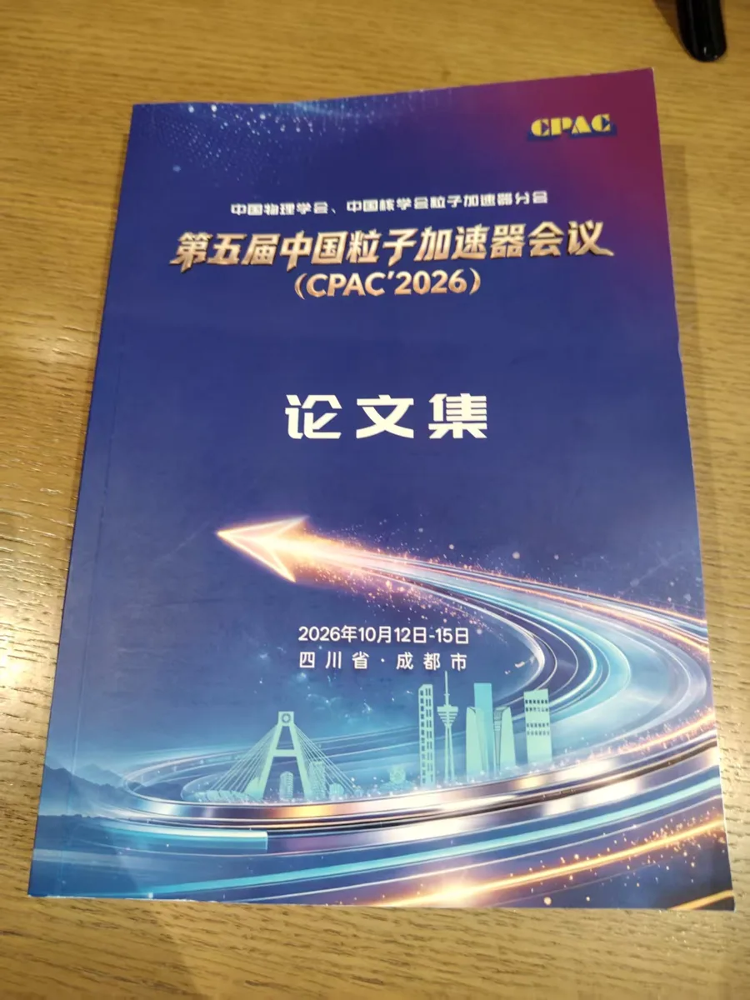

From 12 to 15 October 2026, PhD student Jiangtao Wang【王江涛】 attended the 5th China Particle Accelerator Conference (CPAC’2026, 第五届中国粒子加速器会议) in Chengdu, Sichuan, organised by the particle accelerator branches of the Chinese Physical Society and the Chinese Nuclear Society. He presented the poster “Study of an accelerator-based muography experiment at SHINE” (SHINE加速器缪子成像实验的研究), by Jiangtao Wang and Kim Siang Khaw.


Cosmic-ray muography is slow: only about one muon per square centimetre per minute reaches the ground, mostly from above. The poster explores a faster alternative at SHINE, Shanghai’s hard X-ray free-electron laser, where GeV-scale muons produced by the electron beam on a target could be used for imaging. Using Geant4, Jiangtao modelled the full set-up at Shaft 2 of SHINE, from the 3 GeV, 50 pC, 50 Hz commissioning beam through the beamline and a 3 m concrete wall to the downstream muography test area. Simulated scattering tomography shows that about 3 × 105 muon events — roughly six hours at the commissioning rate — give an image with a structural similarity index above 0.9. He also showed first cosmic-ray tests of the group’s four-layer muon tracker, built from 256 triangular plastic scintillator bars read out by CAEN A5202 electronics, which imaged lead bricks using the PoCA algorithm.
The SHINE muon source also featured in a plenary talk on muon sources in China, listed among the proposed and planned muon sources and beamlines alongside MELODY at CSNS, the muon beamline at HIAF, MuST at CiADS and laser-driven muon experiments at SULF.




Read more in the preprint arXiv:2609.15846 and on the SHINE muon source research page.
2026年10月12日至15日，博士研究生王江涛赴四川成都参加由中国物理学会、中国核学会粒子加速器分会主办的第五届中国粒子加速器会议（CPAC’2026），并以墙报形式报告了“SHINE加速器缪子成像实验的研究”（Study of an accelerator-based muography experiment at SHINE），作者为王江涛、许金祥。
宇宙线缪子成像的速度较慢：到达地面的缪子每分钟每平方厘米仅约一个，且主要来自上方。该墙报探讨了在上海硬X射线自由电子激光装置SHINE上实现更快成像的方案——利用电子束打靶产生的GeV量级缪子进行成像。王江涛基于Geant4对SHINE 2号井的完整布局进行了建模，涵盖从3 GeV、50 pC、50 Hz的调试束流，经束线和3 m厚混凝土墙，直至下游缪子成像测试区的全过程。散射成像模拟显示，约3 × 105个缪子事例（按调试束流强度约需六小时）即可获得结构相似性指数高于0.9的图像。他还展示了课题组四层缪子径迹探测器的首批宇宙线测试结果：该探测器由256根三角形塑料闪烁体条构成，采用CAEN A5202电子学读出，并利用PoCA算法成功对铅砖进行了成像。
此外，SHINE缪子源还出现在一场关于中国缪子源的大会报告中，与CSNS的MELODY、HIAF缪子束线、CiADS的MuST以及SULF激光驱动缪子实验一同被列为拟建和规划中的缪子源与束线。
更多内容请参阅预印本arXiv:2609.15846以及SHINE缪子源研究页面。